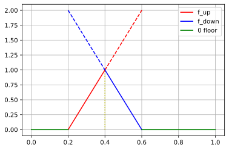

Dimensionality in SuperCollider¶
After we have taken a look at the math perspective of vectors and matrices we now want to shift and expand our view on the topic by taking a look at how to create and interact with vectors and matrices in SuperCollider.
From scalar to vector to matrix¶
Scalar¶
As we discussed a scalar is a single numeric value. This can either be a natural number or a real number.
5
-> 5
1.5
-> 1.5
sqrt(2.0)
-> 1.4142135623731
When working with rational numbers we must take into account that a computer is bound to a limited representation of our number which leads sometimes to unexpected results.
(0.7/0.1).floor.postln;
7.0.floor.postln;
6.0
7.0
-> 7.0
Althogh \(\left \lfloor \frac{0.7}{0.1} \right \rfloor = \lfloor 7 \rfloor = 7\), where \(\lfloor x \rfloor\) is the flooring operator on the variable \(x\), SuperCollider decides to return a 6 instead which is caused by the limited floating point precision.
Vector¶
We can store multiple scalar values into an Array. Have in mind that indexing of arrays start at 0 in most programming languages where in math the convention is to start indexing from 1.
v = [2, 3];
v;
-> [ 2, 3 ]
We can scale each element of our array with a scalar by multiplying a scalar with our array v.
v*4
-> [ 8, 12 ]
v/4
-> [ 0.5, 0.75 ]
We can also multiply the array with another array.
[2,3]*[4,9]
-> [ 8, 27 ]
Lets see what happens when we multiply non-matching dimensions of our arrays.
[2,3]*[4,5,6]
-> [ 8, 15, 12 ]
A bit unexpected that we do not receive an error - SuperCollider expands arrays in such operations to the longest array and cycles through the shorter ones. This allows for very concise code, but you have to take care about the input arrays yourself. Lets see how this cascades when we want to multiply 3 arrays with different size.
[2, 3] * [4, 5, 6] * [7, 8, 9, 10]
-> [ 56, 120, 108, 80 ]
The results are calculated as following:
Matrix¶
Now we can also take a look at how a matrix is represented in SuperCollider.
n = [
[2, 3, 4],
[4, 5, 6],
]
-> [ [ 2, 3, 4 ], [ 4, 5, 6 ] ]
So it is basically just an array of arrays - but let’s take a closer look at this as it is important to get the indices and the dimensions properly when working with matrices.
Let’s say we want to represent a \(3 \times 2\) matrix $\( \text{M} = \begin{pmatrix} 1 & 2\\ 3 & 4\\ 5 & 6 \end{pmatrix} \)$
m = [
[1, 2],
[3, 4],
[5, 6],
];
m.postln;
m[0][1];
[ [ 1, 2 ], [ 3, 4 ], [ 5, 6 ] ]
-> 2
We interpret the first dimension as rows, the second dimension (the elements of the arrays) as columns. This fits nicely with our mathematical notation.
So lets try common operations such as the scaling of a matrix with a scalar.
m*2;
-> [ [ 2, 4 ], [ 6, 8 ], [ 10, 12 ] ]
The multiplication of a matrix with a scalar.
m + 1
-> [ [ 2, 3 ], [ 4, 5 ], [ 6, 7 ] ]
The multiplication of our a matrices with vectors.
m * [1, 0, 2]
-> [ [ 1, 2 ], [ 0, 0 ], [ 10, 12 ] ]
m*m
-> [ [ 1, 4 ], [ 9, 16 ], [ 25, 36 ] ]
m*n
-> [ [ 2, 6, 4 ], [ 12, 20, 18 ], [ 10, 18, 20 ] ]
Although the dimensions are matching with our mathematical definition the results do not match up.
Sets¶
The way to declare a set in SuperCollider is straightforward.
a = Set[1, 2, 3, 1];
a;
-> Set[ 3, 2, 1 ]
Notice that although we declared duplicates in the set this duplication is ignored by SuperCollider as a set can only have unique elements. We can also quickly take a look at the cardinality of sets.
a.size;
-> 3
Note also that due the circumstance that a set has no order we can also not access the i-th element of a set.
a[0]
ERROR: Message 'at' not understood.
RECEIVER:
Instance of Set { (0x7ff1a052d478, gc=D8, fmt=00, flg=00, set=02)
instance variables [2]
array : instance of Array (0x7ff210022858, size=8, set=3)
size : Integer 3
}
ARGS:
Integer 0
PROTECTED CALL STACK:
Meta_MethodError:new 0x7ff1e02c5100
arg this = DoesNotUnderstandError
arg what = nil
arg receiver = Set[ 3, 2, 1 ]
Meta_DoesNotUnderstandError:new 0x7ff1e02c70c0
arg this = DoesNotUnderstandError
arg receiver = Set[ 3, 2, 1 ]
arg selector = at
arg args = [ 0 ]
Object:doesNotUnderstand 0x7ff1f00ba5c0
arg this = Set[ 3, 2, 1 ]
arg selector = at
arg args = nil
a FunctionDef 0x7ff1a0329fd8
sourceCode = "{ var result; \"**** JUPYTER ****\".postln; result = {a[0]}.value(); postf(\"-> %
\", result); \"\".postln;}"
Working with matrices¶
Lets start by implementing a function which will multiply two matrices which also checks if this is a valid operation.
~matrixMul = { |a, b|
if(a[0].size != b.size) { Error("matrix dimensions do not match").throw };
if(a.every({|i| a[0].size == i.size}).not) {Error("input A has non identical dimensions").throw};
if(b.every({|i| b[0].size == i.size}).not) {Error("input B has non identical dimensions").throw};
a.collect { |d| (b * d).sum }
};
-> a Function
Lets take a look at the formula
\(A\) is a \(2 \times 3\) matrix and \(B\) a \(3 \times 1\) matrix, so the resulting matrix \(C\) must be a \(2 \times 1\) matrix. The values can easily be verified if we take a look at the definition of matrix multiplication
~matrixMul.(
[[1, 1, 1], [1,1,3]],
[[2],[1],[1]]
)
-> [ [ 4 ], [ 6 ] ]
We see that our function works as intended - although for a proper validation of this we cannot work with examples but need to examine the code.
We now want to use this function to calculate downmixes in SuperCollider. To do this we first need to start the server.
s.boot();
-> localhost
Lets formalise what we want to do before we start coding it.
where \(\mathcal{U}\) is the Continuous uniform distribution.
\(A\) is a \(2 \times 4\) matrix with random values between \(0\) and \(1\) and our signals are stored in matrix \(B\) as a \(4 \times 1\) array of Ugens. So \(C = A B\) results in a \(2 \times 1\) matrix - so a mixed down stereo signal.
If we would like to have a mix with \(m\) channels, we would need to modify \(A\) to a \(m \times 4\) matrix.
Ndef(\x, {
var a, b, mix, selected, gater;
gater = {
Trig1.kr(
in: PulseDivider.kr(
trig: Impulse.kr(8),
div: IRand(4, 9),
start: IRand(0, 8)),
dur: 1/8
)
};
a = { [1.0, 1.0, 1.0, 1.0].rand } ! 2;
b = [
SinOsc.ar(freq: 400) * gater.value,
Saw.ar(freq: 45) * gater.value,
Pulse.ar(freq: 8000) * gater.value,
Blip.ar(freq: 3, numharm: 140) * gater.value,
];
"Mixing Matrix A %".format(a).postln;
"A shape %".format(a.shape).postln;
"B shape %".format(b.shape).postln;
// calculate a mixdown
mix = ~matrixMul.(a, b);
"Mixdown shape: %".format(mix.shape).postln;
mix*0.2;
}).play;
Mixing Matrix A [ [ 0.38767051696777, 0.12795674800873, 0.51681995391846, 0.76382398605347 ], [ 0.45636820793152, 0.66525650024414, 0.13446116447449, 0.029584407806396 ] ]
A shape [ 2, 4 ]
B shape [ 4 ]
Mixdown shape: [ 2 ]
-> Ndef('x')
In Jupyter Notebook, we stop the audio playback of the SuperCollider server by executing a single dot.
.
-> CmdPeriod
We can spin this example further by adding additional row vectors to our Synth matrix B, so
The problem is that now the operation \(AB\) returns a \(2 \times 3\) matrix which do not fit most representations of speakers.
But we can solve this problem by multiplying a \(3 \times 1\) matrix \(D\) with uniform distributed values as in A so we obtain a \(2\times1\) matrix \(C\) by calculating \(C = (AB)D\).
We see that working with matrices really comes in handy once we start to think in matrices.
Ndef(\x, {
var a, b, mix, selected, gater;
gater = {
Trig1.kr(
in: PulseDivider.kr(
trig: Impulse.kr(8),
div: IRand(4, 9),
start: IRand(0, 8)),
dur: 1/8
)
};
a = { [1.0, 1.0, 1.0, 1.0].rand } ! 2;
b = [
SinOsc.ar(freq: [440, 226, 782]) * gater.value,
Saw.ar(freq: [45, 200, 420]) * gater.value,
Pulse.ar(freq: [300, 200, 100]) * gater.value,
Blip.ar(freq: [3, 5, 2], numharm: 140) * gater.value,
];
d = { [1.0].rand } ! 3;
"A shape %".format(a.shape).postln;
"B shape %".format(b.shape).postln;
"D shape %".format(d.shape).postln;
// calculate a mixdown
mix = ~matrixMul.(~matrixMul.(a, b), d);
"Mixdown shape: %".format(mix.shape).postln;
mix*0.2;
}).play;
A shape [ 2, 4 ]
B shape [ 4, 3 ]
D shape [ 3, 1 ]
Mixdown shape: [ 2, 1 ]
-> Ndef('x')
.
-> CmdPeriod
Lets develop this a bit further.
Lets define a \(10\times5\) signal matrix \(S\) - we want to use the cursor to distribute the matrix across the screen and use the cursor to smoothly transit between each signal of our matrix.
As we want to result in a \(2\times1\) stereo mix \(C\) we know thanks to the dimension rules of matrix multiplication that we need
The \(2 \times 10\) matrix controls the volume of the rows, where the \(5 \times 1\) matrix controls the volume of the columns.
As we gradually want to have a transition between the signals that are close to each other, we have to think about a way how to determine the volume of each signal based on the position of the cursor. The problem is that we cannot solve this with a purely linear function as we need an increasing slope and an decreasing slope (if we approach a point it should go louder but if we pass the point it should go quieter again). But we can combine two linear functions to mimic this behavior by combining an increasing and a decreasing linear function and taking the lowest value of each while they intersect at the \(i\)-th fraction with an co-domain value of 1 (so \(y=1\)).
With some basic calculus we can come up with two simple linear functions which have for \(f_i\) which have
where \(a\) is the number of distinct, even distributed points we want to separate and \(i\) is the \(i\)-th point we want to separate (\(i\) starts counting at 1). We combine both functions by taking the lower of both functions, but also add a \(\max\) function to not go below 0.
In our case the \(x\) of our function is the position of the cursor on the screen.
Note that by multiplying a factor to \(a\) we could in- or decrease the separation of our signals in the mix.
Here is an example plot of the two functions combined where we want to distribute 5 points and looking at the separation of the 3th point.

The plot was generated with Python using
import numpy as np
import matplotlib.pyplot as plt
x_up = np.linspace(0.2, 0.4)
x_down = np.linspace(0.4, 0.6)
left_floor = np.linspace(0.0, 0.2)
right_floor = np.linspace(0.6, 1.0)
plt.plot(x_up, 5*x_up-1, color='r', label='f_up')
plt.plot(x_down, 5*x_down-1, linestyle='--', color='r')
plt.plot(x_down, -5*x_down+3, color='b', label='f_down')
plt.plot(x_up, -5*x_up+3, linestyle='--', color='b')
plt.plot(left_floor, 0*left_floor, color='g', label='0 floor')
plt.plot(right_floor, 0*right_floor, color='g')
plt.vlines(0.4, 0, 1, color='y', linestyle=':')
plt.legend()
plt.grid()
plt.show;
Ndef(\x, {
var mix, s, a, b, allRatios, numRatios=10, numSines=5, baseFreq=200, numOutChannels=2;
// array of numRatios rows, each with numSine sine tones in a series
allRatios = [1.2, 1.25, 1.5, pi/2, 5/4, 7/4, 9/4, 11/4, pi, 13/4][0..numRatios];
s = allRatios.collect { |ratio|
numSines.collect { |i|
var freq = baseFreq * (ratio ** i);
SinOsc.ar(freq: freq) * AmpComp.kr(freq: freq, root: baseFreq)
} * LFNoise2.ar(freq: 70).max(0)
};
// in SC indices start at 0 so we write i+1 and j+1 here
a = numOutChannels.collect({|i|
numRatios.collect({|j|
// to make it more interesting we offset the i-th channel by i
max(
min(
numRatios*MouseY.kr+ (2-(j+1+i)),
(-1)*numRatios*MouseY.kr + (j+1+i),
),
0)
})
});
b = numSines.collect({|i|
1.collect({
max(
min(
numSines*MouseX.kr+ (2-(i+1)),
(-1)*numSines*MouseX.kr + (i+1),
),
0)
})
});
mix = ~matrixMul.(~matrixMul.(a, s), b);
"Shape of A: %".format(a.shape).postln;
"Shape of S: %".format(s.shape).postln;
"Shape of B: %".format(b.shape).postln;
"Shape of C: %".format(mix.shape).postln;
mix*0.3;
}).play;
Shape of A: [ 2, 10 ]
Shape of S: [ 10, 5 ]
Shape of B: [ 5, 1 ]
Shape of C: [ 2, 1 ]
-> Ndef('x')
.
-> CmdPeriod